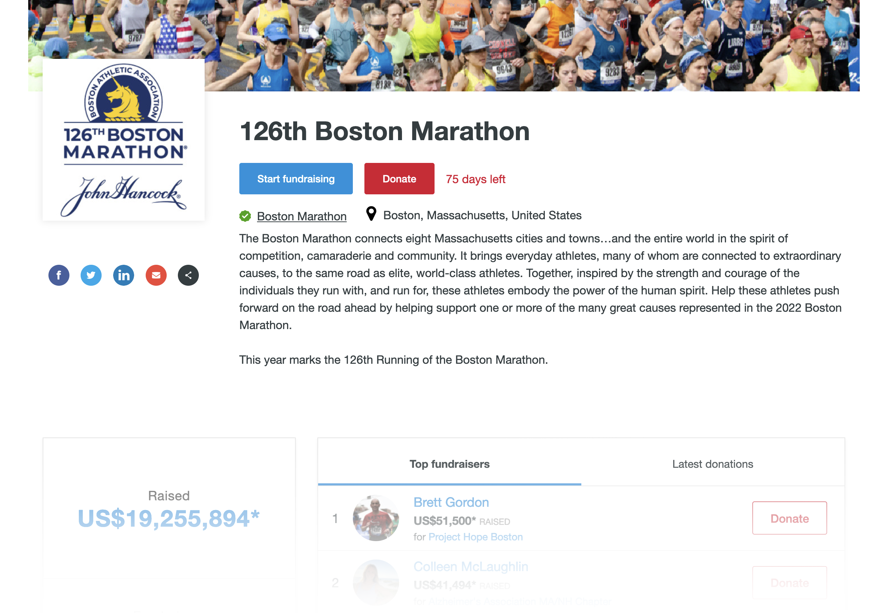
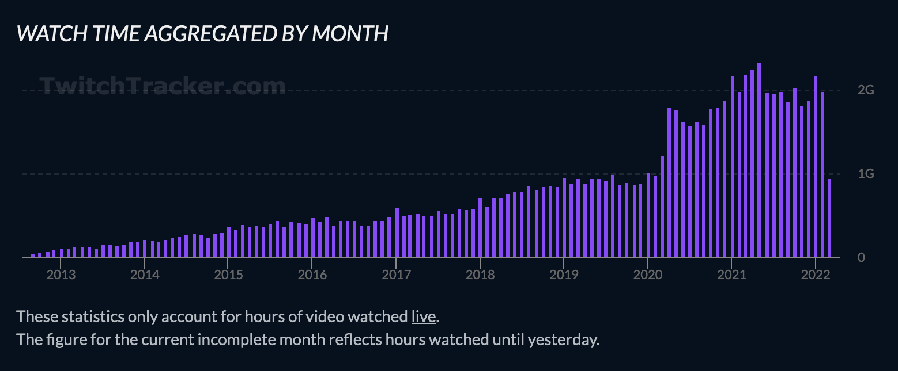
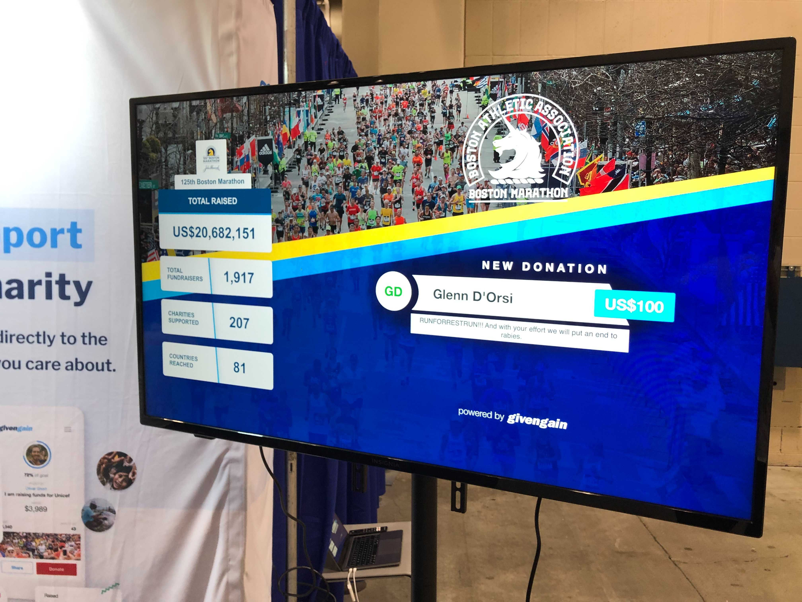

class: center, middle ## Satisfying a Twitch<br />Livestreaming Widgets at GivenGain  Lee Johnson (CPAN: LEEJO / github: leejo) ??? --- ## GivenGain? -- * Non-profit foundation, since 2001 (Perl, CGI) -- * One of the first crowdfunding platforms on the web -- * Simplified the platform over the years -- * Rewritten to Mojolicious/Moose/DBIx::Class in 2014/2015 -- * Events are a recent feature on the platform ---  --- ## 2020 ... -- * Lockdowns -- * [Virtual events](https://www.givengain.com/e/vhi-virtual-event/) became a thing -- * Streaming became [much more popular](https://twitchtracker.com/statistics):  ??? --- ## Twitch? -- * Livestreaming! -- * Often gaming content -- * Streams can go on for hours -- * Some are like modern day Telethons -- * They want tools to visualise fundraising progress and goals ??? --- ## [Widgets!](https://www.givengain.com/widget/livestream/stats_widget?initiative_id=2550) <div id="wrap"> <iframe id="scaled-frame" src="https://www.givengain.com/widget/livestream/stats_widget?initiative_id=2550" title="126th Boston Marathon" scrolling="no" ></iframe> </div> ??? --- ## [More Widgets!](https://www.givengain.com/widget/livestream/donation_alert?initiative_id=2550) <div id="wrap"> <iframe id="scaled-frame" src="https://www.givengain.com/widget/livestream/donation_alert?initiative_id=2550" title="126th Boston Marathon" scrolling="no" ></iframe> </div> --- ## Not Just For Livestreaming  --- ## How Does This All Work? Essentially: -- * Browser connects to Mojolicious server (via load balancer) -- * Connection is upgraded to a websocket -- * Mojolicious opens a consumer connection to RabbitMQ -- * Messages (elsewhere) are pushed to the message queue -- * Consumer websocket receives the JSON message payload -- * HTML DOM dynamically updated to reflect message content ??? The key thing is -- * No refresh of the page required --- ## Browser --- ## Mojolicious --- ## RabbitMQ? -- * Message broker we're using in various systems (async jobs, batch processing, etc) -- * Traditionally: * Messages are delivered to a queue * One queue can have many consumers bound to it * **Each message is delivered to one (and only one) consumer** * Allows massively parallel processing ??? sending emails, generating PDFs, running reports, etc -- * With livestreaming widgets: * Messages are delivered to a "fanout" exchange * One exchange can have many consumers bound to it * **Each message is delivered to every consumer bound to the exchange** ??? --- ## Questions? More info: * [Net::AMQP::RabbitMQ::PP](https://metacpan.org/pod/Net::AMQP::RabbitMQ::PP) <div id="wrap"> <iframe id="scaled-frame" src="https://www.givengain.com/widget/livestream/donation_alert?initiative_id=2550" title="126th Boston Marathon" scrolling="no" ></iframe> </div>